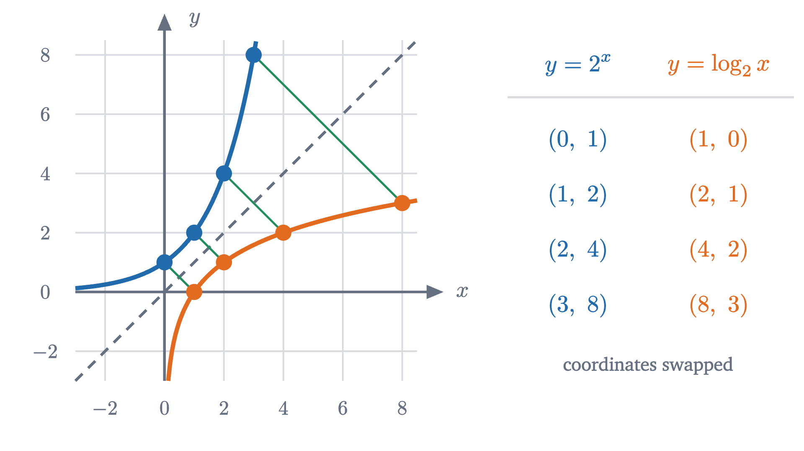
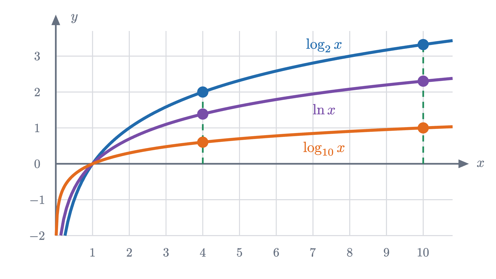
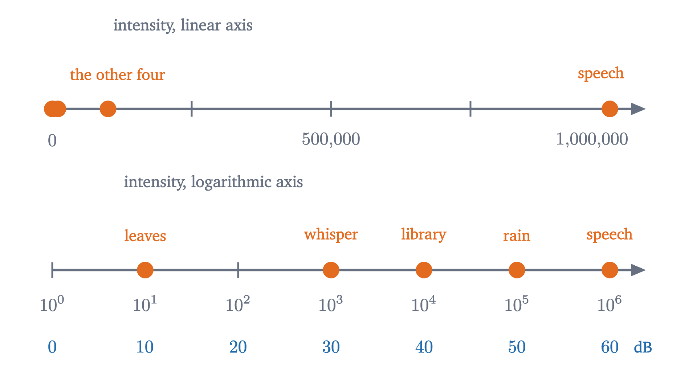

What a logarithm is: turning multiplication into addition
A logarithm answers "what exponent gives this number?". Because exponents add when powers multiply, logarithms turn every product into a sum.
AssumesWhy x⁰ = 1, and negative and fractional exponentsShifting and stretching graphs: why f(x - 2) moves right
Light travels 299,792 kilometers in a second, and a year has 31,557,600 seconds. To find the length of a light-year you have to multiply those two numbers. For an astronomer in 1620, a product of numbers that long meant most of a page of long multiplication, with every digit a chance to slip. Kepler’s work on the orbit of Mars required an enormous amount of such multiplication.
Yet by 1630 astronomers were doing such a multiplication in about a minute, without multiplying anything. They looked up two numbers in a book, added them, and looked up the sum. The book was a table of logarithms. This lesson explains what was in the book, why adding could do the work of multiplying, and why the same idea is now built into the way we measure earthquakes and sound.
Multiplying by adding
The trick is easiest to see on numbers chosen to make it work. Here are the powers of 2.
| $n$ | 0 | 1 | 2 | 3 | 4 | 5 | 6 | 7 | 8 | 9 | 10 | 11 | 12 |
|---|---|---|---|---|---|---|---|---|---|---|---|---|---|
| $2^n$ | 1 | 2 | 4 | 8 | 16 | 32 | 64 | 128 | 256 | 512 | 1024 | 2048 | 4096 |
Suppose you want $32 \times 128$. Both numbers are in the bottom row.
The reason is the first law of exponents. $2^5$ is five 2s multiplied together and $2^7$ is seven, so their product is twelve 2s:
In the top row of the table, multiplication has become addition. Division becomes subtraction in the same way, since $2^m \div 2^n = 2^{m - n}$.
Pause and try
Use the table, and no multiplication, to find $64 \times 16$, then $4096 \div 128$, then $8^4$.
Show answerHide answer
$64 \times 16 = 2^6 \times 2^4 = 2^{10} = 1024$. $4096 \div 128 = 2^{12} \div 2^7 = 2^5 = 32$. For the last one, $8 = 2^3$, so $8^4 = 2^3 \times 2^3 \times 2^3 \times 2^3 = 2^{12} = 4096$: raising to the fourth power multiplied the exponent by 4.
The exponent for a number that is not in the table
The method has an obvious weakness: it only handles numbers in the bottom row. To multiply $3 \times 5$ this way we would need exponents $x$ and $y$ with $2^x = 3$ and $2^y = 5$, and no whole number will do, because $2^1 = 2$ is too small and $2^2 = 4$ is too big.
So we are stuck unless exponents can fall between whole numbers. They can. The lesson on exponents showed that keeping the law $2^x \times 2^y = 2^{x+y}$ true forces $2^{1/2} = \sqrt2$ and, in general, $2^{m/n} = \sqrt[n]{2^m}$. Let us hunt for the exponent of 3. Halfway between 1 and 2 we get $2^{1.5} = 2\sqrt2 \approx 2.828$, which is too small. Then $2^{1.75} \approx 3.364$ is too big, $2^{1.625} \approx 3.084$ is too big, and $2^{1.5625} \approx 2.954$ is too small. The exponent we want is trapped between $1.5625$ and $1.625$, and each further halving traps it more tightly.
Pause and try
The next halving point is $1.59375$, and $2^{1.59375} \approx 3.018$. Between which two of the exponents tried so far does the answer now lie? How many more halvings until the interval is shorter than $0.01$?
Show answerHide answer
$3.018$ is too big, so the exponent lies between $1.5625$ and $1.59375$, an interval of length $0.03125$. Two more halvings give lengths $0.0156$ and then $0.0078 < 0.01$. Carried further, the search gives $1.585$ to three decimal places.
On the graph of $y = 2^x$, the hunt is a search for the place where the curve reaches height 3.
Two things have to be true for this reading-backwards to define a number. Some exponent must work, and only one must work. Here is the precise statement, for any base.
Half of this theorem is proved here and half is cited.
Both clauses matter. In the language of functions, “at most one” says $b^x$ is one-to-one, and “at least one” says its range is all of the positive numbers. Together they say that swapping inputs and outputs gives a function, defined on the positive numbers. That function gets a name.
So $\log_2 8 = 3$ because $2^3 = 8$, $\log_2 \frac12 = -1$ because $2^{-1} = \frac12$, and $\log_2 3 = 1.58496\ldots$ is the number we were hunting. A logarithm is an exponent. The definition says at once that the two operations undo each other:
The exclusions are forced. Base 1 is useless because $1^x = 1$ for every $x$: the equation $1^x = 5$ has no solution and $1^x = 1$ has too many. And since $b^x$ is always positive, $\log_b 0$ and $\log_b(-4)$ do not exist.

The mirror image carries every feature of the exponential across. The exponential has domain all real numbers and range $y > 0$, so the logarithm has domain $x > 0$ and range all real numbers. The exponential passes through $(0, 1)$ and $(1, b)$, so $\log_b 1 = 0$ and $\log_b b = 1$ for every base. And where $2^x$ doubles with each step of 1 to the right, $\log_2 x$ needs its input doubled to rise by 1, which makes it one of the slowest-growing functions you will meet: $\log_2 x$ does not reach 20 until $x$ passes a million.
The three laws
The table of powers of 2 can now be read as a table of logarithms: the top row is $\log_2$ of the bottom row. Our multiplication of $32 \times 128$ went $\log_2 32 + \log_2 128 = 5 + 7 = 12 = \log_2 4096$.
Pause and try
From the table, compute $\log_2 8 + \log_2 16$ and compare with $\log_2(8 \times 16)$. Then compare $\log_2 4096 - \log_2 64$ with $\log_2(4096 \div 64)$, and $4 \times \log_2 8$ with $\log_2(8^4)$. State the three rules you are seeing.
Show answerHide answer
$3 + 4 = 7$ and $8 \times 16 = 128 = 2^7$. $12 - 6 = 6$ and $4096 \div 64 = 64 = 2^6$. $4 \times 3 = 12$ and $8^4 = 4096 = 2^{12}$. The log of a product is the sum of the logs, the log of a quotient is the difference, and the log of a power is the exponent times the log.
These are the laws of exponents seen from the other side. Recall them for a base $b > 0$ and all real $x$, $y$, $r$: $b^x b^y = b^{x+y}$, $b^x / b^y = b^{x-y}$ and $(b^x)^r = b^{xr}$ (proved for rational exponents in the exponents lesson, and carried to real exponents by the limiting construction mentioned there).
Each line used uniqueness: to show that a number is $\log_b$ of something, it is enough to check that $b$ raised to it gives that something.
Changing the base
A calculator has two logarithm keys: log, which is $\log_{10}$, and ln, which is $\log_e$ for the number $e = 2.71828\ldots$ from the lesson on compound interest. There is no key for $\log_2$. We are stuck on $\log_2 3$ again unless one base can be converted to another.
Law 3 does it. Let $x = \log_2 3$, so $2^x = 3$. Take $\log_{10}$ of both sides: $\log_{10}(2^x) = x \log_{10} 2$, so $x \log_{10} 2 = \log_{10} 3$, and
The denominator $\log_c b$ does not depend on $u$. So $\log_b u$ is a fixed multiple of $\log_c u$: for example $\log_2 u = 3.3219 \times \log_{10} u$ for every $u > 0$, since $\frac{1}{\log_{10} 2} \approx 3.3219$. In terms of graphs, the logarithm functions with base above 1 are vertical stretches of one another (a base below 1 adds a flip in the $x$ axis, as Problem 5 shows).

Since they differ only by a constant factor, which base to use is a matter of convenience. Base 2 suits doublings and computer memory, base $e$ suits calculus, and base 10 suits hand calculation in decimal notation, where it is called the common logarithm. From here on, $\log$ with no base means $\log_{10}$.
Tables and the slide rule
Now the astronomers’ book. It listed $\log u$ for every $u$ from 1 to 10 in small steps. That range is enough, because any positive number is a number between 1 and 10 times a power of 10, and law 1 handles the power of 10: $\log 299{,}792 = \log(2.99792 \times 10^5) = \log 2.99792 + 5$.
John Napier published the first such table in 1614, and Henry Briggs recomputed it in base 10 soon after. Within a decade someone had the idea of doing the addition mechanically, by placing lengths end to end.
That is the slide rule in the animation at the top of the page. Engineers carried one until electronic calculators replaced it in the 1970s.
Logarithmic scales
Calculators ended the use of logarithms for arithmetic and left their other use untouched. Some quantities range over so many powers of 10 that an ordinary axis cannot show them. The faintest sound you can hear and ordinary speech differ in intensity (power per unit area) by a factor of about a million.

Placing a quantity on a logarithmic axis means plotting its logarithm, so equal distances stand for equal ratios. The decibel scale for sound is exactly this: a sound of intensity $I$ has level $10 \log\frac{I}{I_0}$ decibels, where $I_0$ is the faintest audible intensity. Speech, at a million times $I_0$, is $10 \log 10^6 = 60$ dB. Earthquake magnitude works the same way. It is the logarithm of the ground motion recorded by a standard seismograph, so one more unit of magnitude means ten times the shaking, and a magnitude 7 earthquake moves the ground 1000 times as much as a magnitude 4.
Pause and try
One machine produces 80 dB. By law 1, what is the level of two such machines running together? (The intensities add.) Guess before computing: 160 dB, or something else?
Show answerHide answer
Two machines give intensity $2I$, so the level is $10\log\frac{2I}{I_0} = 10\log 2 + 10\log\frac{I}{I_0} \approx 3 + 80 = 83$ dB. Doubling the intensity adds $10 \log 2 \approx 3.01$ dB whatever the starting level. Reaching 160 dB would take $10^8$ machines.
Where the laws stop
The laws convert products, quotients and powers. They say nothing about sums.
The hypotheses $u > 0$, $v > 0$ also matter. The expression $\log(x^2)$ makes sense for $x = -3$, where it equals $\log 9$, but $2 \log x$ does not, since $-3$ has no logarithm. Law 3 applies only where $\log x$ exists; the statement valid for every $x \neq 0$ is $\log(x^2) = 2\log|x|$. In the same way $\log\bigl((-2)(-5)\bigr) = \log 10 = 1$ exists while $\log(-2) + \log(-5)$ does not.
Stepping back: the hard step was the first one, deciding to call “the exponent that gives $y$” a number in its own right and checking that it is one, which needed the exponential to hit every positive value exactly once. After that, every property of logarithms was a property of exponents read in the other direction. Inverting a function and reading its laws backwards is a move you will make again, with square roots, with inverse trigonometric functions, and soon with $e^x$ and $\ln x$ in calculus.
Check yourself
Which of these equals $\log(1000x)$ for every $x > 0$? (Here $\log$ is base 10.)
Problems
Work these on paper before opening the solutions. A calculator is needed only where a decimal answer is asked for. The first three repeat the lesson’s moves, the next three combine them, and the last two go further.
Problem 1
Evaluate without a calculator: (a) $\log_2 64$, (b) $\log_3 \frac19$, (c) $\log_{10} 0.001$, (d) $\log_4 8$, (e) $\log_5 1$.
Show solutionHide solution
In each case find the exponent. (a) $2^6 = 64$, so 6. (b) $3^{-2} = \frac19$, so $-2$. (c) $10^{-3} = 0.001$, so $-3$. (d) We need $4^t = 8$; writing both as powers of 2, $2^{2t} = 2^3$, so $t = \frac32$. Check: $4^{3/2} = (\sqrt4)^3 = 8$. (e) $5^0 = 1$, so 0.
Problem 2
Given only $\log 2 \approx 0.3010$ and $\log 3 \approx 0.4771$ (base 10), find (a) $\log 6$, (b) $\log 5$, (c) $\log 12$, (d) $\log 1.5$, (e) $\log \sqrt{3}$.
Show solutionHide solution
(a) $\log 6 = \log 2 + \log 3 \approx 0.7781$. (b) $5 = \frac{10}{2}$, so $\log 5 = \log 10 - \log 2 = 1 - 0.3010 = 0.6990$. (c) $12 = 2^2 \times 3$, so $\log 12 = 2(0.3010) + 0.4771 = 1.0791$. (d) $\log\frac32 = 0.4771 - 0.3010 = 0.1761$. (e) $\sqrt3 = 3^{1/2}$, so $\log\sqrt3 = \frac12(0.4771) \approx 0.2386$.
Problem 3
Solve $3^x = 20$ to three decimal places, and check your answer.
Show solutionHide solution
Take common logarithms: $x \log 3 = \log 20$, so $x = \frac{\log 20}{\log 3} \approx \frac{1.30103}{0.47712} \approx 2.727$. Check: $3^2 = 9$ and $3^3 = 27$, so the exponent must lie between 2 and 3, nearer 3; and a calculator gives $3^{2.727} \approx 20.00$.
Problem 4
A concert measures 105 dB and a busy street 75 dB. How many times as intense is the sound at the concert? What decibel level is 50 times as intense as the street?
Show solutionHide solution
The levels differ by 30 dB, so $10\log\frac{I_1}{I_0} - 10\log\frac{I_2}{I_0} = 30$. By law 2 the left side is $10\log\frac{I_1}{I_2}$, so $\log\frac{I_1}{I_2} = 3$ and the ratio is $10^3 = 1000$. For the second part, multiplying the intensity by 50 adds $10\log 50 = 10(\log 100 - \log 2) \approx 10(2 - 0.3010) = 16.99$ dB, giving about 92 dB.
Problem 5
Let $b > 0$, $b \neq 1$ and $u > 0$. Prove that (a) $\log_b \frac1u = -\log_b u$, and (b) $\log_{1/b} u = -\log_b u$. What does (b) say about the graphs of $\log_2 x$ and $\log_{1/2} x$?
Show solutionHide solution
(a) By law 2, $\log_b\frac1u = \log_b 1 - \log_b u = 0 - \log_b u$. (b) By change of base with $c = b$, $\log_{1/b} u = \frac{\log_b u}{\log_b (1/b)}$, and $\log_b\frac1b = -\log_b b = -1$ by part (a). So $\log_{1/b} u = -\log_b u$. (The base $\frac1b$ is allowed: it is positive and not 1.) For the graphs: $\log_{1/2} x = -\log_2 x$, so each is the mirror image of the other in the $x$ axis. A logarithm with base less than 1 is a decreasing function.
Problem 6
How many digits does $2^{100}$ have? First explain why a whole number $N \geq 1$ has $\lfloor \log N \rfloor + 1$ digits, where $\lfloor t \rfloor$ means $t$ rounded down to a whole number.
Show solutionHide solution
A whole number with $d$ digits satisfies $10^{d-1} \le N < 10^d$. Because $\log$ is increasing, this is the same as $d - 1 \le \log N < d$, which says $\lfloor\log N\rfloor = d - 1$. So $d = \lfloor\log N\rfloor + 1$. For $N = 2^{100}$, law 3 gives $\log N = 100\log 2 \approx 30.103$, so $N$ has $30 + 1 = 31$ digits. (Indeed $2^{100} = 1{,}267{,}650{,}600{,}228{,}229{,}401{,}496{,}703{,}205{,}376$.)
Problem 7
Find the error in this argument. “We know $\frac14 > \frac18$, that is, $\left(\frac12\right)^2 > \left(\frac12\right)^3$. Take logarithms: $2\log\frac12 > 3\log\frac12$. Divide both sides by $\log\frac12$: $2 > 3$.”
Show solutionHide solution
Every step is correct except the last. Taking logarithms preserves the inequality because $\log$ is increasing, and law 3 is applied correctly. But $\log\frac12 = -\log 2 \approx -0.301$ is negative, and dividing an inequality by a negative number reverses it. Done correctly the last step gives $2 < 3$. As a check, the middle line says $-0.602 > -0.903$, which is true.
Problem 8
Prove that $\log_2 3$ is irrational, that is, not equal to any fraction $\frac{p}{q}$ of whole numbers.
Show solutionHide solution
Suppose $\log_2 3 = \frac{p}{q}$ with $p$ and $q$ whole numbers and $q > 0$. Since $\log_2 3 > \log_2 1 = 0$, also $p > 0$. By definition $2^{p/q} = 3$, and raising both sides to the power $q$ gives $2^p = 3^q$. The left side is even, because $p \ge 1$. The right side is a product of 3s, which is odd. An even number cannot equal an odd one, so no such fraction exists. This is why the halving search for $\log_2 3$ never ended: it was closing in on a number that no fraction reaches.